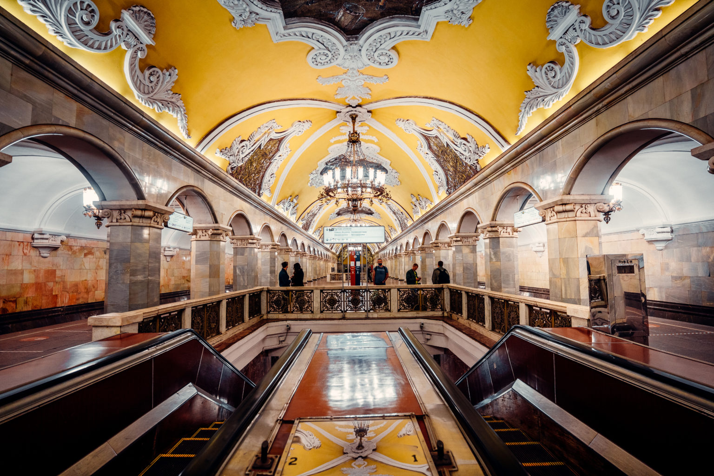
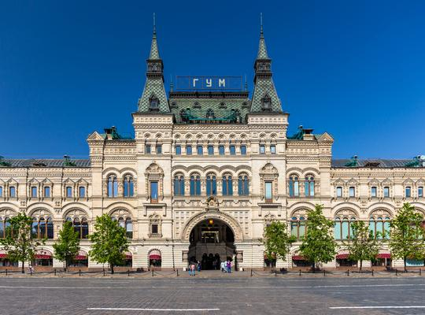
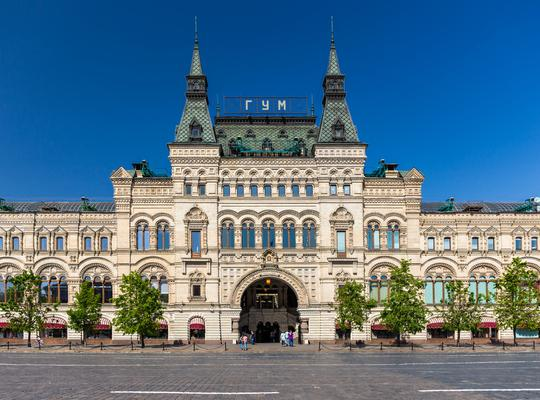
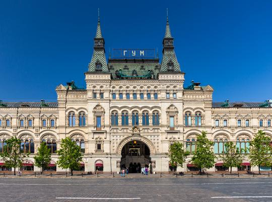
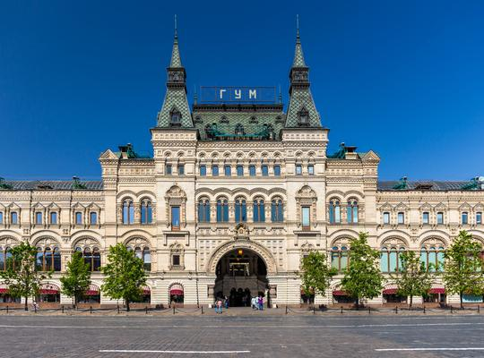

To-Do List for Moscow:
- Take a trip on the Moscow Metro
- Visit St.Basil's Cathedral
- Go around the GUM Department Store

 


Despite this being the first ever city I got to travel to in Europe, it was definetily one I couldn't forget- or ever dream of forgetting.
What fascinated me the most was the architecture. The domes, the colisseum, the beautiful streets... Everything down to the last detail. Take the street lamps for example-
they all are different, but in a way they all belong together. The are curved and elegant and light up the streets during the night in the most romantic way possible.
Basically, my trip to Rome was fabulous. It's definitely a must-visit that you have to go to at least once during your lifetime. When you do go, you have
to see the Colisseum, also known as the Flavian Amphitheatre, visit the Pantheon and fuel your inner artist by goung to the Galleria Borghese.
To wrap this up, I'd like to note that the best time for visitng Rome is from March to May, as the spring provides a comfortable climate there is a lower amount of tourists around the city. Moreover, don't forget that Rome doesn't just consist of the city itself, but there are also various towns around it which you can visit.
My final tip for going to Rome would be to watch out for pickpockets, especially at very crowded areas such as the piazzas and the Colisseum.
Madrid is located in the heart of Spain and it is a city full of lively people and amazing traditional cuisine. I visited Madrid after Rome, at around mid-july, during high season.
Despite the crowds, I still got to visit many of the beautiful sights that Madrid has to offer. For example I visited the Parque del Retiro- an astonishingly relaxing park that was suprisingly clean.
There I found gorgeous foutains that gleamed perfectly beneath the hot summer sun.
I would definitely recommend visiting Madrid during Autumn or Spring, as the weather is around 20°C and
there are less tourists around. The prices are cheaper then too!
Moscow is a city of wonderful sights- especially during the winter, when the buildings are coated with delicate white snow- the city then reminds me of a gingerbread village coated with powdered sugar.
I visited Moscow pre-war and I really enjoyed visiting the Red Square, as from it you could see Moscow's most important buildings- the Kremlin, the State History Museum and St. Basil's Cathedral, within others. St. Basil's Cathedral is a must-visit in my opinion, as it's beauty is simply one-of-a-kind and it's part of Russia's historic heritage.
